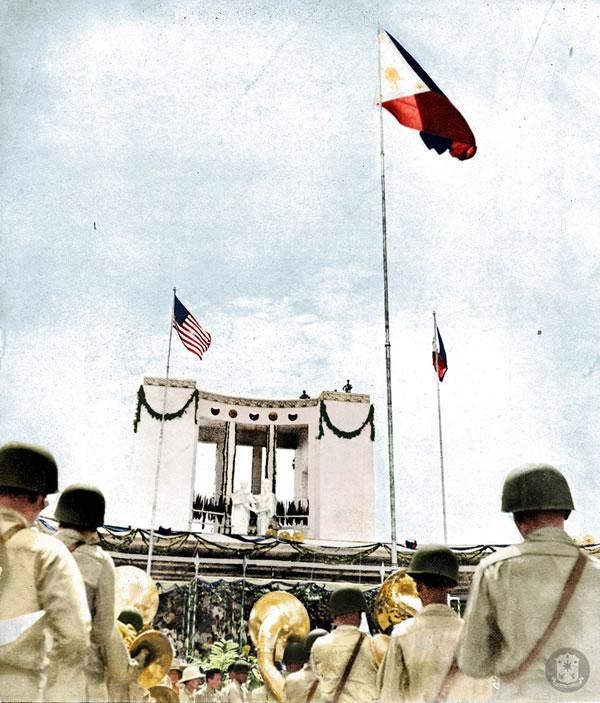
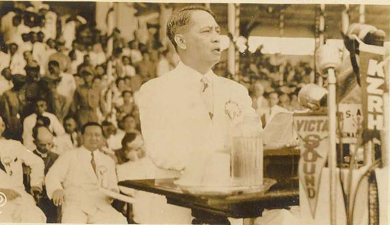
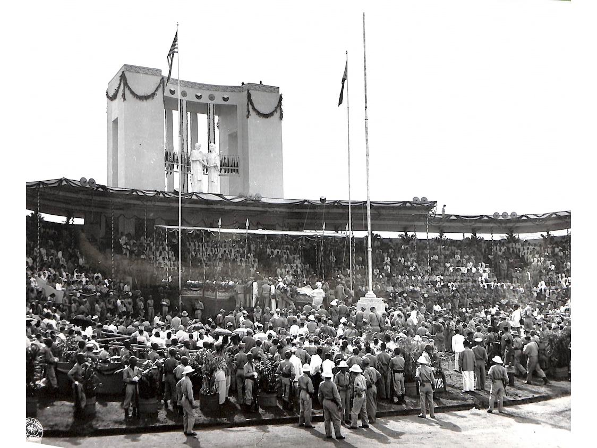

Philippine Independence (1946-Present)



On July 4, 1946, the Philippines officially gained independence from the United States. Since then, the country has continued developing its government, economy, and national identity.
Important Facts:
- Manuel Roxas became the first president of the independent Third Republic.
- The country rebuilt after World War II.
- The Philippines experienced different political administrations.
- Martial Law was declared under Ferdinand Marcos Sr. in 1972.
- The 1986 People Power Revolution restored democratic government.